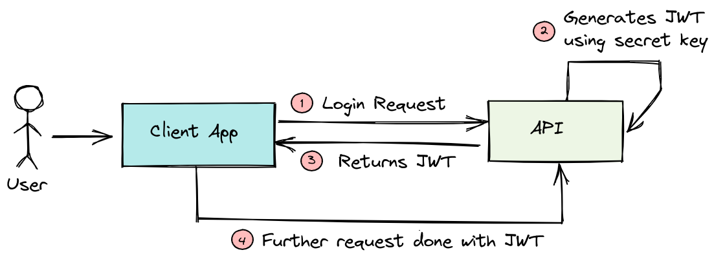
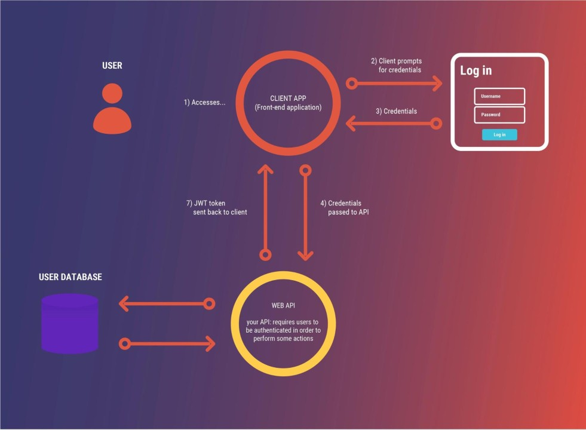

Guide sur les JSON Web Tokens (JWT)
Ce guide explique en détail ce qu'est un JSON Web Token (JWT), comment il fonctionne et comment l'utiliser dans vos applications.
Table des matières
- Introduction aux JWT
- Structure d'un JWT
- Utilisation des JWT
- Sécurité des JWT
- Exemple pratique
- Signatures JWT et Leur Description
- Claims JWT et Leur Description
- Claims JWT Publics
- Claims JWT Privés
- Erreurs Courantes avec les JWT
- Meilleures Pratiques pour les JWT
- Informations qu’on peut mettre dans un token
- Différence entre Token d'authentification et Token d'autorisation
- Processus de Gestion des Permissions dans une Application React Native avec API Node.js
- Conclusion
- Sources
Introduction aux JWT
Contexte Historique : Les JSON Web Tokens (JWT) ont été introduits en 2014 par le groupe de travail JWT au sein de l'IETF (Internet Engineering Task Force). JWT est une spécification qui est devenue un standard ouvert pour le transfert sécurisé d'informations entre deux parties. Avec l'augmentation des API web et des applications distribuées, JWT est devenu un choix populaire pour l'authentification et l'échange de données, grâce à sa simplicité et à sa capacité à transporter des informations de manière sécurisée.
Un JSON Web Token (JWT) est un format de jeton ouvert qui permet la transmission sécurisée d'informations entre deux parties sous la forme d'un objet JSON. Ces informations sont signées numériquement pour garantir l'authenticité et l'intégrité des données.
Cas d'Utilisation : Les JWT sont largement utilisés dans divers scénarios, notamment :
- Authentification d'API : Permet aux clients de se connecter à un serveur et d'accéder aux ressources protégées sans avoir à se réauthentifier à chaque demande.
-
Single Sign-On (SSO) : Facilite l'authentification unique entre plusieurs applications ou services.
Stateless : Pas besoin de stocker les sessions sur le serveur. -
Échange de Données : Transfert sécurisé de données entre différentes parties ou systèmes.
Structure d'un JWT
Un JWT est composé de trois parties séparées par des points :
- Header : Contient le type (typ) de token (JWT) et l'algorithme de signature (alg).
- Payload : Contient les revendications (claims) document Json, c'est-à-dire les informations à transmettre.
C'est l'emplacement ou est précisé les dates de création et d'expiration du token.
Exemple: (exp = expiration en timestamp "exp": 1647807974) - Signature : Vérifie que le contenu n'a pas été altéré. Signé avec un secret que seul le server connaît.

Décodage d'un JWT : Pour décoder un JWT, vous pouvez utiliser des outils en ligne comme Décryptage et vérification JWT via jwt.io qui permettent de visualiser les parties Header, Payload, et Signature du token. Vous pouvez également utiliser des bibliothèques spécifiques dans divers langages de programmation pour décoder et vérifier les JWT.
Utilisation des JWT
Les JWT sont souvent utilisés pour : - Authentification : Ils permettent à un utilisateur de se connecter une fois et de continuer à accéder aux ressources sans avoir à se reconnecter à chaque requête. - Échange d'information sécurisé : Le contenu d'un JWT peut être signé et éventuellement chiffré.

Sécurité des JWT
Bien que les JWT soient pratiques, il est essentiel de les utiliser correctement pour garantir la sécurité :
- Stockage Sécurisé des Clés : Utilisez des systèmes de gestion des secrets ou des environnements sécurisés pour stocker les clés secrètes utilisées pour signer les JWT.
- Rotation des Clés : Mettez en place une stratégie de rotation régulière des clés pour minimiser le risque d'exposition en cas de compromission.
- Expiration des Tokens : Définissez une période d'expiration appropriée pour vos JWT afin de limiter la durée pendant laquelle un token peut être utilisé en cas de compromission.
- Régénération des Tokens : Utilisez des mécanismes pour renouveler les tokens expirés, comme les tokens de rafraîchissement, pour maintenir l'accès sans nécessiter une nouvelle authentification complète.
- Évitez le Stockage Local : Ne stockez pas de JWT sensibles dans le stockage local du navigateur ; utilisez des cookies sécurisés et HTTP-only si vous devez stocker des tokens.
- Utilisez HTTPS : Assurez-vous que toutes les communications impliquant des JWT sont protégées par HTTPS pour éviter les attaques de type "man-in-the-middle".
- Invalider les Tokens : Assurez-vous d'avoir un mécanisme pour invalider les tokens si nécessaire.
Exemple pratique
Voici comment générer un JWT en utilisant la bibliothèque jsonwebtoken en Node.js :
const jwt = require('jsonwebtoken');
const token = jwt.sign({ userId: 123 }, 'secret_key', { expiresIn: '1h' });
console.log(token);

Conclusion
Les JWT sont un outil puissant pour l'authentification et l'échange sécurisé de données, mais ils doivent être utilisés avec prudence pour éviter des failles de sécurité. Prenez soin de toujours protéger vos tokens et de suivre les meilleures pratiques en matière de sécurité.
JWT Security Best Practices - Auth0
Tableaux
Signatures JWT et Leur Description
| Exemple de Signature JWT | Description |
|---|---|
HS256 |
HMAC avec SHA-256, un algorithme de hachage symétrique utilisé pour la signature. |
RS256 |
RSA avec SHA-256, un algorithme de hachage asymétrique qui utilise une paire de clés publique et privée. |
ES256 |
ECDSA avec SHA-256, une signature numérique basée sur la cryptographie elliptique. |
PS256 |
RSA-PSS avec SHA-256, une variante de RSA pour des signatures plus sécurisées. |
EdDSA |
Utilise les courbes de Edwards pour des signatures rapides et sécurisées, souvent Ed25519. |
none |
Pas de signature, utilisé pour les JWT non signés, généralement déconseillé pour la sécurité. |
Claims JWT et Leur Description
| Claim JWT | Description |
|---|---|
alg |
Algorithm : Spécifie l'algorithme de signature utilisé pour le JWT (par exemple, HS256, RS256). |
cty |
Content Type : Indique le type de contenu du JWT, souvent utilisé pour préciser le type du payload. |
typ |
Type : Spécifie le type de jeton, par exemple "JWT" pour un JSON Web Token. |
kid |
Key ID : Identifiant de la clé utilisée pour signer le jeton, utile pour gérer plusieurs clés. |
iss |
Issuer : Identifie l'émetteur du jeton. |
sub |
Subject : Identifie le sujet du jeton, souvent l'utilisateur ou l'entité à laquelle le jeton se réfère. |
exp |
Expires At : Spécifie la date et l'heure d'expiration du jeton, après laquelle il ne sera plus valide. |
nbf |
Not Before : Spécifie la date et l'heure avant laquelle le jeton ne devrait pas être accepté. |
iat |
Issued At : Spécifie la date et l'heure à laquelle le jeton a été émis. |
jti |
JWT ID : Identifiant unique pour le jeton, souvent utilisé pour éviter les rejets de jetons. |
aud |
Audience : Spécifie le ou les destinataires pour lesquels le jeton est destiné. |
Claims JWT Publics
| Claim JWT | Description |
|---|---|
email |
Adresse e-mail de l'utilisateur. |
username |
Nom d'utilisateur. |
role |
Rôle ou privilèges de l'utilisateur (par exemple, "admin", "user"). |
name |
Nom complet de l'utilisateur. |
scope |
Portée ou les permissions accordées par le jeton. |
Claims JWT Privés
| Claim JWT | Description |
|---|---|
user_id |
Identifiant unique de l'utilisateur dans votre base de données. |
department |
Département ou section de l'organisation à laquelle l'utilisateur appartient. |
custom_claim |
Toute autre donnée personnalisée ajoutée au jeton en fonction des besoins spécifiques de l'application. |
Erreurs Courantes avec les JWT
| Erreur | Description |
|---|---|
Invalid Token |
Le jeton est invalide ou malformé. |
Token Expired |
Le jeton a expiré et n'est plus valide. |
Token Not Yet Valid |
Le jeton est utilisé avant sa date de validité. |
Signature Verification Failed |
La signature du jeton ne correspond pas, indiquant une possible falsification ou une clé incorrecte. |
Missing Claim |
Un claim requis est absent dans le jeton. |
Meilleures Pratiques pour les JWT
| Pratique | Description |
|---|---|
| Utiliser HTTPS | Toujours utiliser HTTPS pour transmettre les JWT afin de protéger les données en transit. |
| Expiration | Définir une date d'expiration appropriée pour les jetons afin de limiter leur durée de validité. |
| Rotation des Clés | Régulièrement faire tourner les clés de signature pour améliorer la sécurité. |
| Validation des Claims | Toujours valider les claims du JWT (comme exp, nbf, aud) pour s'assurer de leur légitimité. |
| Utiliser des Algorithmes Sécurisés | Choisir des algorithmes de signature sécurisés comme RS256 ou ES256 au lieu de none. |
Informations qu’on peut mettre dans un token
Un JWT (JSON Web Token) peut contenir plusieurs informations dans ses claims :
- Registered claims :
iss(issuer) : l'émetteur du token.sub(subject) : l'identité du sujet (généralement un utilisateur).exp(expiration) : la date d'expiration du token.iat(issued at) : la date de création du token.- Public claims : des informations personnalisées comme le nom d'utilisateur, le rôle, l'e-mail.
- Private claims : des données définies par l'émetteur et le récepteur pour des besoins spécifiques.
Difference entre Token d authentification et Token d autorisation
- Token d'authentification :
- Utilisé pour vérifier l'identité de l'utilisateur.
- Fournit un accès à l'application après une connexion réussie.
-
Exemple : Un token pour confirmer que l'utilisateur est bien celui qu'il prétend être.
-
Token d'autorisation :
- Utilisé pour accorder ou limiter l'accès à certaines ressources ou actions spécifiques.
- Gère les permissions (ce que l'utilisateur peut ou ne peut pas faire).
- Exemple : Un token indiquant si l'utilisateur peut accéder à une API particulière.
Processus de Gestion des Permissions dans une Application React Native avec API Node.js
La gestion des permissions dans une application React Native utilisant une API Node.js et une base de données SQL suit généralement ces étapes :
1. Authentification utilisateur
- Connexion : L'utilisateur se connecte via l'application React Native (par exemple, avec un formulaire).
- Vérification : L'API Node.js vérifie les informations d'identification dans la base de données SQL et génère un token JWT.
2. Envoi du token
- Renvoi du token : Après une connexion réussie, le token JWT est renvoyé au client (React Native) et stocké en local (local storage ou secure storage).
3. Requêtes avec autorisation
- Envoi du token : Pour chaque requête nécessitant une permission, le client envoie le token JWT dans les headers de la requête (généralement dans le header
Authorization).
4. Vérification des permissions
- Validation du token : L'API Node.js vérifie le token JWT pour confirmer l'identité de l'utilisateur et récupérer les permissions associées.
- Permissions en base : Les permissions peuvent être stockées dans la base de données SQL (par exemple, les rôles ou droits de l'utilisateur).
5. Autorisation
- Comparaison des permissions : L'API Node.js compare les permissions de l'utilisateur avec l'action demandée. Si l'utilisateur est autorisé, la requête est traitée ; sinon, une erreur est renvoyée (403 Forbidden).
Exemple : Un utilisateur avec un rôle "admin" peut accéder à des routes spécifiques de l'API (comme la gestion d'utilisateurs), tandis qu'un utilisateur avec un rôle "user" n'a accès qu'à des fonctionnalités basiques.
Sources
- https://www.youtube.com/watch?v=5qNfPBcogCs
- https://www.atatus.com/blog/jwt-authentication-when-and-how-to-use-it/
- https://medium.com/@adesinabolaji/fundamentals-of-jwt-json-web-token-bafb2cfbd159
- https://jwt.io/introduction
- https://redis.io/blog/json-web-tokens-jwt-are-dangerous-for-user-sessions/